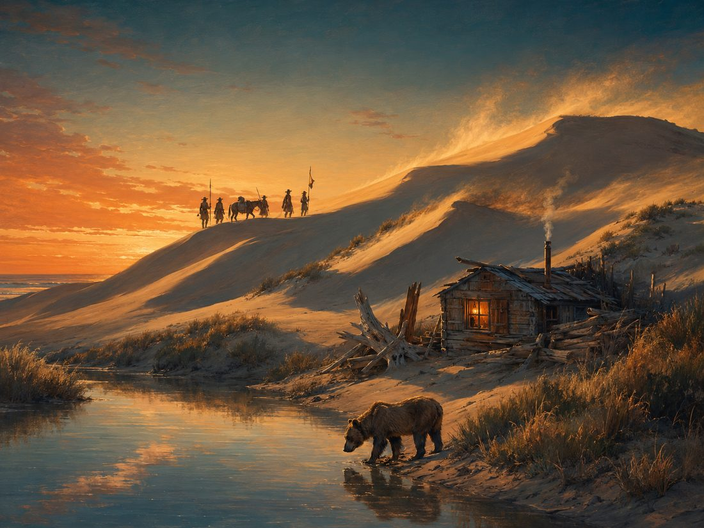

Eighteen miles of coastal dunes, beach camping under the stars, and the finest OHV riding on the West Coast. CCWheelers is your complete guide to visiting Oceano Dunes the right way.
Updated throughout the day so you know before you go.
Formerly Pismo Dunes SVRA, this geologically unique dune complex draws off-highway enthusiasts from across the country. Beyond riding, visitors come for swimming, surfing, kite surfing, jet skiing, surf fishing, camping, and hiking.
Camp right on the beach south of Post 2 or in the open dunes. Reservations open 10 days to 6 months in advance and holiday weekends fill fast. Bring water, pack out trash, and plan on 4-wheel drive.
Camping detailsFires are allowed, and driftwood collecting is encouraged here. But there are rules that will save you a ticket, and one that keeps everyone safe: never bury a fire in sand.
Fire rulesThe riding area starts at Post 2, one mile south of Pier Avenue. Every OHV needs a current green sticker, and Sand Highway follows regular highway law up to Pole 11.
Riding rulesArroyo Grande Creek can close access to the OHV and camping areas after storms or dam releases. When it is closed, crossing gets you a ticket. No exceptions.
Current statusKnow before you go: CB channel 9 reaches ranger base, and a solar-powered emergency call box sits at the entrance to Sand Highway. Plus our field-tested tips for getting unstuck.
Safety guideExplore the dunes before you arrive with our interactive satellite map: named camps, gates, Competition Hill, zone boundaries, and GPS waypoints across the riding area.
Open the mapCamping is allowed south of Post 2 on the beach and in the open dune area. Vault and chemical toilets are provided. This is primitive beach camping, so come prepared.


Unlike most state parks, Oceano Dunes encourages visitors to collect and burn the driftwood laying around, and after a storm there is plenty of free wood to burn.
The OHV area begins at Post 2, one mile south of Pier Avenue. All OHVs must be transported to that point before off-loading. Fenced and signed areas are closed to protect private property and sensitive plant and animal life.
Every OHV must be registered through the DMV and display a current green sticker. Those registration dollars fund the acquisition, development, and operation of OHV areas statewide.
Sand Highway is a legal extension of Highway 1, and all highway rules apply up to Pole 11: seatbelts, speed limits, helmet law, and DUI enforcement included. No driver's license is required in the open riding area, but a suspended or revoked license means you cannot legally operate here.
Dune crests run north to south with gentle windward slopes and steep leeward drops. Slipfaces normally face east, so be extra cautious riding east. Learn the telltale signs and avoid surprises.
It happens to everyone eventually. Work the problem in this order before calling for a tow (beach towing is available if you need it).
Air down. Drop your tire pressure, but do not go below 15 PSI.
Dig out. Clear the sand from around all four tires.
Push straight. Recruit some friends, keep the front wheels straight, and push while driving gently forward or backward.
Never spin your wheels. Spinning only digs you in deeper. Duner trick: pour water on the sand ahead of your tires — wet sand packs hard.
Minimize your chance of injury and maximize the fun with common sense and courtesy to other riders.
Gear up. Every ATV rider must wear a helmet and should wear proper protective clothing.
Get trained. A certified ATV safety course is recommended for everyone and mandatory for riders under 18.
Learn the terrain and your vehicle's controls before you open it up.
Ride within your limits. When in doubt, stop, think, and look it over before you proceed.
People always ask whether "closed" means "not recommended" or "you will be cited." We asked the local authorities directly. The answer: if you cross, you will get a ticket.
Why so strict? If you do not make it across and your life is on the line, you are now risking the lives of the local authorities who have to rescue you. Please follow the rules.
Conditions update automatically throughout the day. Full creek details → · Monthly tide chart →

This is what "wait a few hours" prevents. When the creek is running, patience is the cheap option.
For vehicle accidents or injuries, contact a ranger or radio ranger base on CB channel 9. It is monitored and it works out on the sand where cell coverage gets thin.
A solar-powered emergency call box is located at the entrance to Sand Highway. Know where it is before you need it.
Never move an injured person unless he or she is in immediate danger. Wait for trained help to arrive.
Scientists, conservationists, government agencies, and the public all agree: the Oceano dune complex is the most extensive coastal dune system left in the state. Rivers carried this sand to the ocean, currents deposited it here, and the wind sculpted it into the wave-like crests you ride today.
The threatened snowy plover and endangered California least tern both nest inside the SVRA. From March 1 through September 30, fenced enclosures protect nests, and with ongoing support from OHVers the program has been a huge success.
Arroyo willow, California sagebrush, sand verbena, and bush lupine are native here, alongside rarities like surf thistle and giant coreopsis. Most dune plants are fragile and easily destroyed, so respect the fenced areas.
Clams may be taken with a fishing license and a rigid measuring device: minimum 4½ inches, bag limit of 10, from half an hour before sunrise to half an hour after sunset. Rebury the undersized ones where you dug them.
Portola's overland expedition crossed these dunes in 1769, where his men killed "un oso flaco," a skinny bear, giving Oso Flaco Lake its name. In the 1930s and 40s the dunes became home to the Dunites: mystics, nudists, artists, writers, and hermits who published a magazine called The Dune Forum.
The Dunites believed Oceano Dunes was one of the centers of creative energy in California. Seek out the solitude of the dunes and perhaps you will feel it too.

Central Coast Wheelers does its part by picking up trash, repairing fences, and helping visitors learn the rules. Want to pitch in? Volunteer with us. Want to support the fight to keep OHV access alive? Donations go to Friends of Oceano Dunes, who carry the cause in the political arena. There is power in numbers, but only when the numbers work as a team.